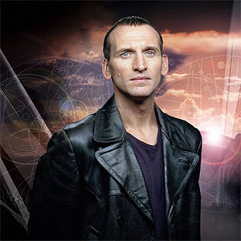

[Primary Navigation]

The First Doctor |
| The Second Doctor |
| The Third Doctor |
| The Fourth Doctor |
| The Fifth Doctor |
| The Sixth Doctor |
| The Seventh Doctor |
| The Eigth Doctor |
| The Ninth Doctor |
| The Tenth Doctor |
The Eleventh Doctor |
| The Twelfth Doctor |
The Ninth Doctor
Portrayed by Christopher Eccleston
The Ninth Doctor was the ninth incarnation of the Time Lord known as the Doctor. Coping with the nightmarish events of the Last Great Time War, he tended to brood and act crossly to those who rubbed him the wrong way. Despite this, he remained jovial and quite friendly towards anyone he took a liking to. Rose Tyler was his most constant companion, although he did share several adventures with Jack Harkness as well. Absolutely definitive statements about the origins of the Ninth Doctor were complicated, however, by a lack of knowledge about his precise contributions in the Time War and the circumstances in which he regenerated from his predecessor.
During the Slitheen's attempt to destroy the Earth for profit, he gained temporary allies in Rose's mother Jackie, Rose's ex-boyfriend Mickey, and Harriet Jones. He also had a single adventure with Adam Mitchell, an employee of Henry van Statten, at Rose's request.
He regenerated after he directly absorbed time vortex energy that had converted Rose briefly into the Bad Wolf entity. Though this saved her, it caused massive damage to his body at the cellular level.